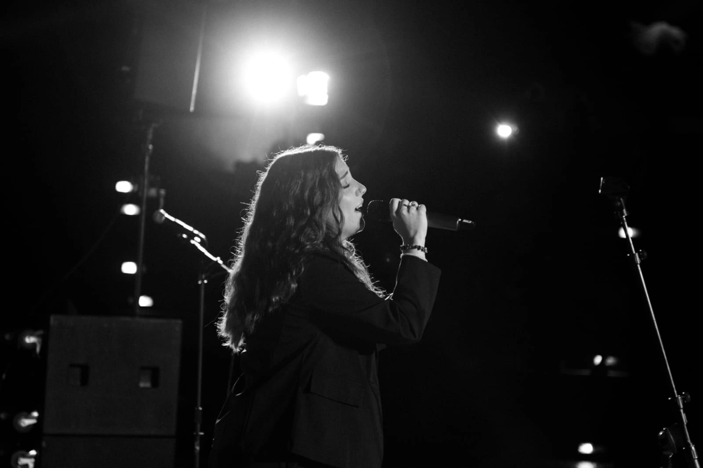
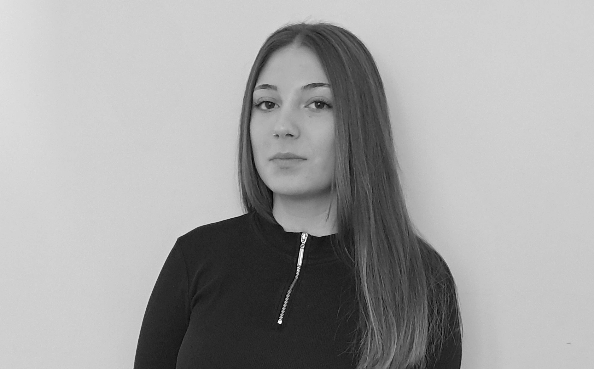
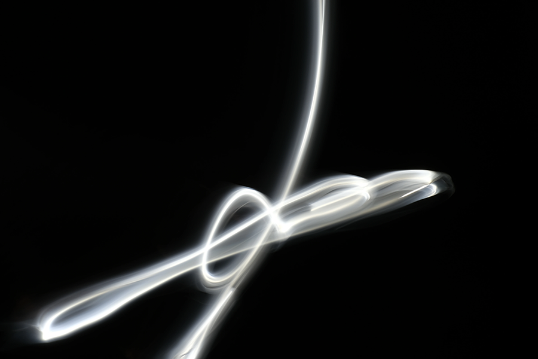
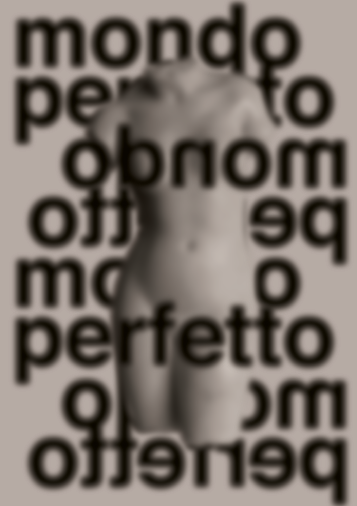
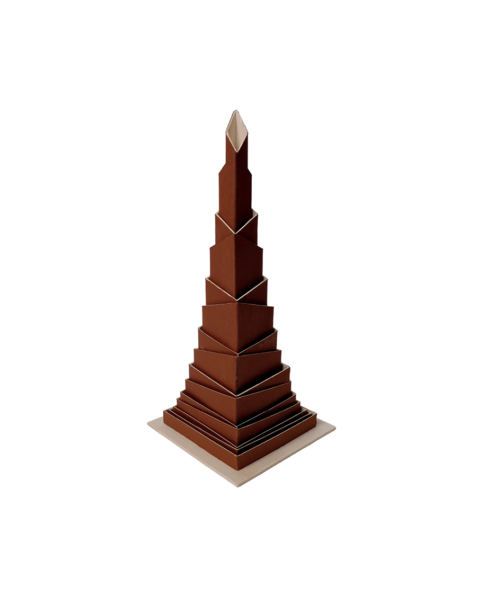
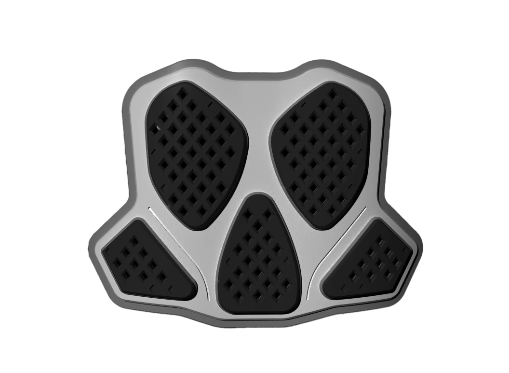
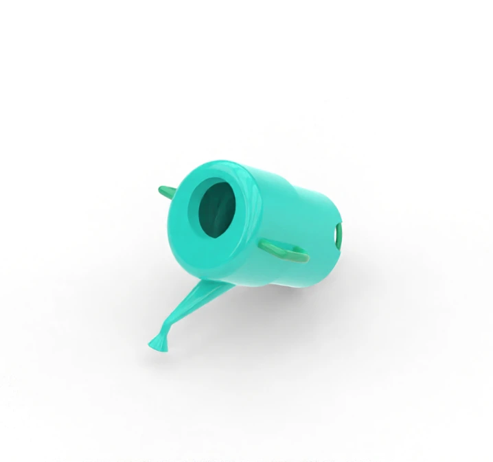
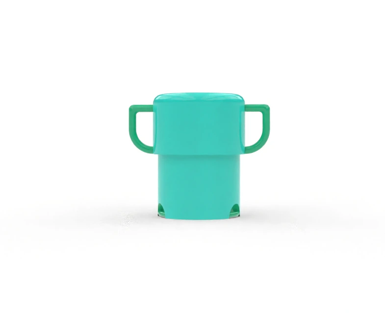

Studentessa di design al secondo anno. Mi immergo ogni giorno nel product design, un campo che vedo
come avventura creativa.
La mia passione nasce dal desiderio di dare vita a oggetti che raccontano storie e risolvono
esigenze reali.
Il mio percorso nasce dalla musica: il canto è stato il mio primo palcoscenico, oggi il design ne è
il complemento.

"Il design nasce dal territorio e dalla cultura che lo abita."
- Enzo Mari-
Dalla teoria alla forma: una selezione di progetti che spaziano dal product design alla
comunicazione visiva.
Ogni lavoro rappresenta una sfida risolta attraverso la ricerca, la sperimentazione materica e il
desiderio di creare oggetti che non siano solo funzionali, ma capaci di dialogare con chi li usa.

Comunicazione

Luce
Un’indagine sul caos visivo e urbano. Utilizza scatti a lunga esposizione e tracce luminose irregolari per rappresentare graficamente il disordine del territorio, raccogliendo i risultati in un sedicesimo.

Utopia
Un lavoro sull'intangibile e il rispetto. Attraverso l'uso della sfocatura, il progetto trasforma il concetto di utopia in un messaggio sociale, rappresentando la figura femminile in modo libero e non sessualizzato.
Prodotto

Wonka
Uno studio sulla geometria come linguaggio. Si tratta di una struttura a torre composta da parallelepipedi concentrici ruotati di 45°. È un esercizio di precisione formale realizzato in cartonlegno e compensato.

Pettorina da Motocross
Un progetto di design funzionale e tecnico sviluppato in 3D. La struttura a quattro livelli con fori romboidali è studiata per massimizzare l'elasticità e la protezione, unendo sicurezza e libertà di movimento.
Workshop


Annaffiamici
Un oggetto di mediazione e cooperazione. Questo speciale annaffiatoio funziona solo se tenuto e coordinato da due persone contemporaneamente. È pensato per risolvere i conflitti tra fratelli, trasformando la cura delle piante in un obiettivo comune e ludico.